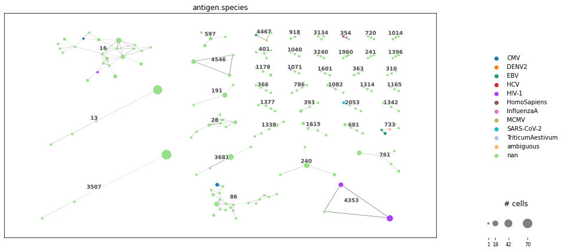
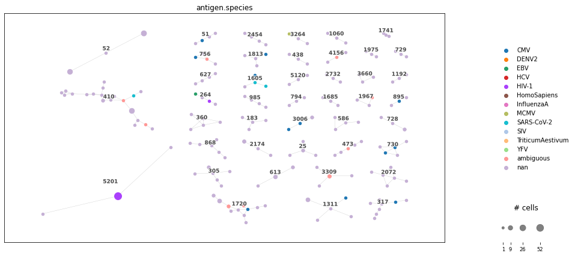
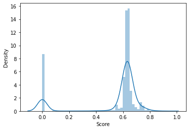

42. 特异性分析#
关键要点
AIR 序列决定了细胞的表位特异性（epitope-specificity）。AIR 序列相似的细胞，会结合相同的抗原。
特异性可以通过数据库查询、AIR 比较或预测来推断。
大多数方法尚未经过独立的基准测试，使用时应保持谨慎并进行额外的验证。
环境设置
安装 conda:
在创建环境之前，请确保 conda 已安装在您的系统中。
保存 yml 内容:
将 yml 选项卡中的内容复制到名为
environment.yml的文件中。
创建环境:
打开终端或命令提示符。
运行以下命令：
conda env create -f environment.yml
激活环境:
创建好环境后，使用以下命令激活它：
conda activate <environment_name>
替换
<environment_name>，名称就是在environment.yml文件中指定的那个。在 yml 文件里，它看起来像这样：name: <environment_name>
验证安装:
通过运行以下命令，检查环境是否创建成功：
conda env list
42.1. 介绍#
B 细胞和 T 细胞通过其 AIR 识别各自的靶标。它们的特异性由氨基酸序列决定。以往研究提供的证据表明，影响 AIR-靶标相互作用最主要的因素是 VDJ 链的 CDR3 序列，其次是 VJ 链的 CDR3 序列（影响程度较小） [Springer et al., 2021].
在许多研究中，确定单细胞的特异性具有关键意义：研究者由此可以挑选出与研究相关的细胞并观察其行为。特异性筛选可以通过 pMHC 多聚体（针对 TCR）或带有特征条形码标记的抗原（针对 BCR）来进行。然而，这会给研究设计带来又一层复杂性，并进一步增加成本。用于推断特异性的计算方法可以提供这一层信息。
在此，我们将介绍以下方法：
数据库查询：多个数据库收集了来自各种研究的 IR 序列及其靶标。我们可以用它们来寻找与自己单细胞研究相匹配的条目。
聚类和距离: [Glanville et al., 2017] 研究表明，具有相似受体的 IR 具有共同的特异性。这一性质已被用于多种方法中，借助距离度量和无监督聚类来比较 AIR。
表位预测：最近，开发了几种机器学习方法，可直接预测 AIR 与靶标之间的结合。理论上，这些方法可用于直接为单细胞研究中涉及的 AIR 指定特异性。
然而，这三种方法都有重大缺陷。公共数据库中样本的数量严重偏向于那些被广泛研究的疾病和应用场景。举例来说，这导致主要公共数据库中针对 TCR 只有数百条已知结合的表位序列。此外，这些数据库中的大多数样本并不提供完整的 AIR 序列（两条链的 V、(D、) J 基因和 CDR），而是聚焦于 CDR3，并且往往只报告 VJ 或 VDJ 序列。
42.2. TCR 特异性分析#
下面，我们将针对 TCR 展示这些方法。以往研究 [Davis and Bjorkman, 1988, Glanville et al., 2017, Rudolph et al., 2006] 表明，TCR 在 CDR3（特别是 β 链的 CDR3）处与 pMHC 紧密接触。这与 TCR 序列的高变区相一致。在 [Springer et al., 2021] 由 Springer 等人撰写的研究中，报告了不同信息（TCR 和 MHC 类型的各个要素）对训练一个基于序列的分类器的重要性，这些结果与上述发现大体一致：
CDR3β > V-和J-基因 > CDR3α > MHC > 细胞类型
我们可以假定，这种重要性不仅对于预测，而且对于查询、聚类和距离计算来说都是类似的。
警告
Scirpy 更改了格式 其数据结构 （在 v0.13 中）。虽然整体分析流程没有改变，但本章中展示的一些输出可能不再准确。
See scirpy 发布说明 关于这个变化的更多细节。在更新本章之前，请参考 scirpy 官方文档.
import warnings
warnings.filterwarnings(
"ignore",
".*IProgress not found*",
)
import matplotlib.pyplot as plt
import pandas as pd
import scanpy as sc
import scirpy as ir
import seaborn as sb
让我们从以前的笔记本上加载数据。
path_data = "data"
path_tcr = f"{path_data}/TCR_01_preprocessed.h5ad"
adata_tcr = sc.read(path_tcr)
# TODO final decision sampling: prosponed until remaining chapters are fixed
adata_tcr = adata_tcr[adata_tcr.obs["patient_id"].isin(["CV0902", "AP6"])].copy()
42.2.1. 数据库查询#
在这里，我们将从以往研究中查找带有特异性注释的 TCR。包含 TCR-表位对的常见大型数据库有：
immuneCodeTM 用于 COVID 特异性 TCR [Nolan et al., 2020]
前四个通用数据库收集了来自多种疾病的 TCR-肽对，而 immuneCode 则专注于与 SARS-CoV-2 相关的 TCR。然而，这些数据库在收录哪些表位上存在严重偏差。因此，你需要检查哪个数据库包含足够多、针对你研究的特定疾病的 TCR。视具体应用而定，内容更有针对性的数据库或研究数据可能更合适。
总体而言，精确率与召回率之间存在权衡，这取决于查询的严格程度，而严格程度又取决于我们用哪些信息来定义克隆型（见“克隆型定义”）。遗憾的是，对于应当考虑哪些信息，并没有通用的指南。下面，我们将以不同的严格程度对照 VDJdb 查询我们的数据，因为在通用数据库中，它包含了种类最多样的 SARS-CoV-2 表位。
这个数据库可以通过 Scirpy 方便地访问。关于 TCR、表位和实验设置的信息存储在 vdjdb.obs 中，遵循常见的 Scirpy 格式。
vdjdb = ir.datasets.vdjdb()
vdjdb.obs.head(5)
| multi_chain | species | mhc.a | mhc.b | mhc.class | antigen.epitope | antigen.gene | antigen.species | reference.id | method.identification | ... | IR_VDJ_2_sequence_id | IR_VJ_1_v_call | IR_VJ_2_v_call | IR_VDJ_1_v_call | IR_VDJ_2_v_call | IR_VJ_1_v_cigar | IR_VJ_2_v_cigar | IR_VDJ_1_v_cigar | IR_VDJ_2_v_cigar | has_ir | |
|---|---|---|---|---|---|---|---|---|---|---|---|---|---|---|---|---|---|---|---|---|---|
| cell_id | |||||||||||||||||||||
| 0 | False | HomoSapiens | HLA-B*08 | B2M | MHCI | FLKEKGGL | Nef | HIV-1 | PMID:15596521 | tetramer-sort | ... | NaN | TRAV26-1*01 | NaN | TRBV13*01 | NaN | NaN | NaN | NaN | NaN | True |
| 1 | False | HomoSapiens | HLA-B*08 | B2M | MHCI | FLKEKGGL | Nef | HIV-1 | PMID:15596521 | tetramer-sort | ... | NaN | NaN | NaN | TRBV13*01 | NaN | NaN | NaN | NaN | NaN | True |
| 2 | False | HomoSapiens | HLA-B*08 | B2M | MHCI | FLKEKGGL | Nef | HIV-1 | PMID:15596521 | tetramer-sort | ... | NaN | TRAV20*01 | NaN | TRBV13*01 | NaN | NaN | NaN | NaN | NaN | True |
| 3 | False | HomoSapiens | HLA-B*08 | B2M | MHCI | FLKEKGGL | Nef | HIV-1 | PMID:15596521 | tetramer-sort | ... | NaN | TRAV2*01 | NaN | TRBV13*01 | NaN | NaN | NaN | NaN | NaN | True |
| 4 | False | HomoSapiens | HLA-B*08 | B2M | MHCI | FLKEKGGL | Nef | HIV-1 | PMID:15596521 | tetramer-sort | ... | NaN | TRAV38-2/DV8*01 | NaN | TRBV14*01 | NaN | NaN | NaN | NaN | NaN | True |
5 rows × 92 columns
VDJdb 为我们提供了 TCR-表位对的各种额外信息，例如鉴定方法或相关疾病。下面我们看看这个数据库中包含哪些表位和疾病。
vdjdb[vdjdb.obs["antigen.species"] == "SARS-CoV-2"].obs[
"antigen.epitope"
].value_counts()
YLQPRTFLL 1326
SPRWYFYYL 309
TTDPSFLGRY 254
RLQSLQTYV 150
LTDEMIAQY 135
...
LQAENVTGL 1
LPSYAAFAT 1
LPPVYTNSF 1
LPPANTNSF 1
YYTSNPTTF 1
Name: antigen.epitope, Length: 667, dtype: int64
vdjdb[vdjdb.obs["antigen.species"] == "SARS-CoV-2"].obs[
"antigen.species"
].value_counts()
SARS-CoV-2 4566
Name: antigen.species, dtype: int64
可以很容易地观察到，大量样本点来自 SARS-CoV-2 衍生的肽 YLQPRTFLL。这一点也反映在数据库内的疾病分布中。
42.2.1.1. 手动查询#
两个数据集之间的查询，已经整合在 Scirpy 和 scRepertoire 等其他工具包中。因此，要把单细胞数据查询到一个新数据库，最方便的做法是把该数据库转换成工具包的格式，并使用工具包的函数。不过，由于并非每个工具包都提供这些功能，而且我们可能想添加更多约束（例如 MHC 类型），下面我们将展示一个手动执行基本查询的示例，它可以针对其他数据库、工具包和约束进行改编。
首先，我们把 VDJdb 缩减为那些 CDR3β 序列与我们数据有重叠的样本。这会大大缩小数据库规模，从而减少计算时间。
print(f"Amount of samples in VDJDB: {len(vdjdb)}")
vdjdb_overlap = vdjdb[
vdjdb.obs["IR_VDJ_1_junction_aa"].isin(adata_tcr.obs["IR_VDJ_1_junction_aa"])
].obs
vdjdb_overlap = vdjdb_overlap[["IR_VDJ_1_junction_aa", "antigen.species"]]
print(f"Amount of overlapping samples in VDJDB: {len(vdjdb_overlap)}")
Amount of samples in VDJDB: 60055
Amount of overlapping samples in VDJDB: 7761
其次，我们在查询数据中标注出与数据库有重叠的列。稍后，我们将利用这一注释，只处理存在重叠的数据。
adata_tcr.obs["has_vdjdb_overlap"] = adata_tcr.obs["IR_VDJ_1_junction_aa"].isin(
vdjdb_overlap["IR_VDJ_1_junction_aa"]
)
adata_tcr.obs["has_vdjdb_overlap"].value_counts()
False 11522
True 1293
Name: has_vdjdb_overlap, dtype: int64
接下来，我们需要定义一个函数，根据各种特征的输入返回所需的注释。这里，我们查询完全相同的 CDR3β 链，但理论上也可以在此添加其他约束。基于这一序列，会选出 VDJdb 中所有具有相同序列的条目。由此，我们收集与这些条目相关的所有疾病。如果关联到多种疾病，就返回 ‘ambiguous’（模糊），否则返回该疾病。
def assign_disease(cdr3beta):
matching_rows = vdjdb_overlap[vdjdb_overlap["IR_VDJ_1_junction_aa"] == cdr3beta]
diseases = matching_rows["antigen.species"].values.tolist()
diseases = list(set(diseases))
if len(diseases) > 1:
return "ambiguous"
if len(diseases) == 0:
return "no entry"
return diseases[0]
最后，我们把这个函数应用到查询数据上。结果列为我们提供了每个细胞中与该 TCR 关联的疾病注释。
adata_tcr.obs["antigen.species_manual"] = (
adata_tcr[adata_tcr.obs["has_vdjdb_overlap"]]
.obs["IR_VDJ_1_junction_aa"]
.apply(assign_disease)
)
adata_tcr.obs["antigen.species_manual"].value_counts()
CMV 601
EBV 83
HIV-1 70
ambiguous 55
SARS-CoV-2 12
HomoSapiens 8
InfluenzaA 7
HCV 4
TriticumAestivum 1
YFV 1
DENV2 1
MCMV 1
SIV 1
Name: antigen.species_manual, dtype: int64
我们观察到与不同疾病的若干匹配。必须谨慎看待这些注释，因为它们受到以下因素影响：疾病在数据库中的丰度、数据库中的错误注释、信息不完整导致的假匹配，以及表位可能存在的 MHC 限制。不过，从针对特定疾病的 TCR 的大量出现可以推断：某位患者对巨细胞病毒（CMV）和 EB 病毒（EBV）存在潜伏感染，这两种病毒在人群中很常见。而第三常见的疾病关联，则指向较为少见的 HIV-1。
42.2.1.2. 以各种严格性查询#
同样的查询也可以通过 Scirpy 等工具包来完成。首先，我们计算 Query（我们的单细胞数据）与数据库（这里是 VDJdb）中 TCR 之间的重叠。得到的 VJ 和 VDJ 受体矩阵（n_ours × n_vdjdb）中，两个数据集 TCR 匹配处为 1，否则为 0。
我们向该函数调用提供以下附加信息：
metric=’identity’:目前我们只考虑精确的序列匹配。我们稍后还将提出类似序列的查询。
sequence=’aa’:TCR序列在氨基酸水平上而不是在核碱基上进行比较，因为特异性取决于蛋白质结构，这些信息由VDJdb提供。
metric = "identity"
sequence = "aa"
ir.pp.ir_dist(adata_tcr, vdjdb, metric=metric, sequence=sequence)
接下来，我们将根据我们提供的条件来匹配查询和数据库之间的所有细胞:
metric=’identity’, sequence=’aa’:我们需要提供距离计算中所用的相同值
receptor_arms=’VDJ’：基于 CDR3β 比较 TCR。其他选项有 ‘VJ’（α 链）、‘all’（α 链和 β 链）以及 ‘any’（α 链或 β 链）。
dual_ir=’primary_only’：如第一章所述，T 细胞可以携带次要 TCR。这个参数决定在哪个受体上执行查询。其他选项有 ‘any’（主要或次要受体）和 ‘all’（主要和次要受体）。
ir.tl.ir_query(
adata_tcr,
vdjdb,
metric=metric,
sequence=sequence,
receptor_arms="VDJ",
dual_ir="primary_only",
)
100%|█████████████████████████████████████| 6191/6191 [00:04<00:00, 1292.12it/s]
最后，我们可以用数据库中匹配条目的注释，对单细胞数据中的 TCR 进行注释。
metric=’identity’, sequence=’aa’: 使用先前提供的相同值。
include_ref_cols：来自参考数据库、将被添加到查询数据库的列的列表。这里，我们将添加抗原的物种和表位序列。
suffix:在这里，我们将用一个后缀标记不同的查询。
ir.tl.ir_query_annotate(
adata_tcr,
vdjdb,
metric=metric,
sequence=sequence,
include_ref_cols=["antigen.species", "antigen.epitope"],
)
adata_tcr.obs["antigen.species"].value_counts()
100%|█████████████████████████████████████| 1690/1690 [00:00<00:00, 5387.03it/s]
CMV 601
EBV 83
HIV-1 70
ambiguous 55
SARS-CoV-2 12
HomoSapiens 8
InfluenzaA 7
HCV 4
TriticumAestivum 1
YFV 1
DENV2 1
MCMV 1
SIV 1
Name: antigen.species, dtype: int64
我们在这里得到的结果与上面的手动查询相同，其优点是所需的自定义代码更少。此外，当不查询精确匹配时，距离度量也已经内置实现。
接下来，我们执行一个类似的查询，但只针对 α 链。我们用后缀 ‘_VJ’ 来标示这一指派。由于我们此前已经计算过匹配矩阵，这里只需执行注释步骤。
ir.tl.ir_query(
adata_tcr,
vdjdb,
metric=metric,
sequence=sequence,
receptor_arms="VJ",
dual_ir="primary_only",
)
ir.tl.ir_query_annotate(
adata_tcr,
vdjdb,
metric=metric,
sequence=sequence,
include_ref_cols=["antigen.species", "antigen.epitope"],
suffix="_VJ",
)
adata_tcr.obs["antigen.species_VJ"].value_counts()
100%|█████████████████████████████████████| 5209/5209 [00:03<00:00, 1536.95it/s]
100%|█████████████████████████████████████| 4064/4064 [00:00<00:00, 5683.50it/s]
ambiguous 927
CMV 466
InfluenzaA 349
MCMV 143
SARS-CoV-2 55
EBV 43
HomoSapiens 27
HCV 11
HIV-1 6
YFV 3
HSV-2 1
Homo sapiens 1
Name: antigen.species_VJ, dtype: int64
注意，我们得到的 α 链匹配更多，因为它的可变性低于 β 链。这导致许多 TCR 无法唯一地指派给某一特定疾病，因此是 ‘ambiguous’（模糊）的。正如预期，我们仍能观察到许多与 CMV 的匹配，进一步增强了存在感染的可能性。然而，针对 HIV 的特异性 TCR 迹象则很有限。
最后，我们在两个受体上查询相同的序列:
ir.tl.ir_query(
adata_tcr,
vdjdb,
metric=metric,
sequence=sequence,
receptor_arms="all",
dual_ir="primary_only",
)
ir.tl.ir_query_annotate(
adata_tcr,
vdjdb,
metric=metric,
sequence=sequence,
include_ref_cols=["antigen.species", "antigen.epitope"],
suffix="_fullIR",
)
adata_tcr.obs["antigen.species_fullIR"].value_counts()
100%|██████████████████████████████████████| 6722/6722 [00:07<00:00, 850.87it/s]
100%|███████████████████████████████████████| 328/328 [00:00<00:00, 5088.80it/s]
CMV 87
InfluenzaA 26
EBV 21
ambiguous 16
HomoSapiens 5
HIV-1 4
YFV 3
SIV 1
SARS-CoV-2 1
Name: antigen.species_fullIR, dtype: int64
由于这次搜索约束更严格，我们得到的匹配更少。不过，这些匹配的质量可能更高。
42.2.2. 距离#
为了检测具有共同特异性的细胞，我们可以计算它们的 TCR 之间的成对序列距离。这既可以用于在数据集内对细胞分组，也可以用于增加我们从数据库查询中得到的命中数。就序列距离而言，一般有三种不同的方法：
编辑距离：计算把第一个序列变换成第二个序列的代价。
k- mer 匹配：比较两个序列之间长度为 k 的短基序（motif）的出现情况。
Embeddings：把序列嵌入到一个数值表示中（例如通过深度学习）。
注意，这些方法尚未经过独立的基准测试。因此，这里我们只聚焦于两种选定的距离度量：
TCRdist：这个常用的度量使用所有 CDR 的序列，通过变换代价和缺口罚分来比较它们 [Dash et al., 2017]。其代价基于 BLOSUM 矩阵，该矩阵给出了一种氨基酸被另一种氨基酸替换的概率 [Henikoff and Henikoff, 1992]。通过纳入完整序列，与其他方法相比，其准确性很可能更高，但当只提供部分信息时，其适用性会受到限制。
TCRmatch：这一新颖的度量使用所有 k-mer，基于两个 TCR 的 CDR3β 序列来比较它们之间的基序重叠 [Chronister et al., 2021]。因此，它也可用于大多数主要只包含这一信息的数据库。它还被方便地整合进了 IEDB。
这些度量以 AIR 序列作为输入。因此，具有相同受体的细胞会得到相同的输出。为降低计算成本，我们先从 AnnData 对象中把唯一的 AIR 提取到一个 DataFrame 中。
42.2.3. TCRdist#
from tcrdist.repertoire import TCRrep
TCRdist 需要两条链完整的 CDR3 和 V 基因信息。因此，我们过滤掉所有缺少这些信息的细胞。为了避免 DataFrame 中分类型条目带来的问题，我们把所有列的类型改为 ‘str’。最后，我们去除重复（即只考虑克隆型），以降低计算成本。
adata_tcrdist = adata_tcr[
~adata_tcr.obs["chain_pairing"].isin(["No IR", "orphan VDJ", "orphan VJ"])
]
for col in ["IR_VJ_1_v_call", "IR_VDJ_1_v_call"]:
adata_tcrdist = adata_tcrdist[~adata_tcrdist.obs[col].isna()]
adata_tcrdist = adata_tcrdist.copy()
df_tcrdist = adata_tcrdist.obs[
[
"IR_VJ_1_junction_aa",
"IR_VJ_1_v_call",
"IR_VJ_1_j_call",
"IR_VDJ_1_junction_aa",
"IR_VDJ_1_v_call",
"IR_VDJ_1_j_call",
"chain_pairing",
"patient_id",
"antigen.species",
"initial_clustering",
]
].copy()
for col in df_tcrdist.columns:
df_tcrdist[col] = df_tcrdist[col].astype(str)
df_tcrdist = df_tcrdist.drop_duplicates()
df_tcrdist = df_tcrdist.reset_index(drop=True)
我们需要把 DataFrame 调整为 TCRdist 所要求的格式，为此重命名各列。此外，TCRdist 需要 V 基因的亚型，而我们的数据中没有提供。假设各亚型之间高度相似，我们把亚型 ‘*01’ 分配给所有 V 基因。注意：TCRdist 会在内部重新排列输出的 DataFrame。因此，我们把索引作为一列加入，以便之后恢复原始顺序。
dict_rename_tcrdist = {
"IR_VJ_1_junction_aa": "cdr3_a_aa",
"IR_VJ_1_v_call": "v_a_gene",
"IR_VDJ_1_junction_aa": "cdr3_b_aa",
"IR_VDJ_1_v_call": "v_b_gene",
}
df_tcrdist = df_tcrdist.rename(columns=dict_rename_tcrdist)
df_tcrdist["v_a_gene"] = df_tcrdist["v_a_gene"].astype(str) + "*01"
df_tcrdist["v_b_gene"] = df_tcrdist["v_b_gene"].astype(str) + "*01"
df_tcrdist["count"] = 1 # todo
df_tcrdist["index"] = df_tcrdist.index
df_tcrdist.head(5)
| cdr3_a_aa | v_a_gene | IR_VJ_1_j_call | cdr3_b_aa | v_b_gene | IR_VDJ_1_j_call | chain_pairing | patient_id | antigen.species | initial_clustering | counts | index | |
|---|---|---|---|---|---|---|---|---|---|---|---|---|
| 0 | CAVKRGNNARLMF | TRAV21*01 | TRAJ31 | CASSQTGGQPQHF | TRBV5-1*01 | TRBJ1-5 | single pair | CV0902 | nan | CD8 | 1 | 0 |
| 1 | CAVGAPGDDKIIF | TRAV8-3*01 | TRAJ30 | CASRPSGLNTDTQYF | TRBV7-9*01 | TRBJ2-3 | single pair | CV0902 | nan | CD8 | 1 | 1 |
| 2 | CAVNSPGGYQKVTF | TRAV8-1*01 | TRAJ13 | CAISASGGGSSGNTIYF | TRBV10-3*01 | TRBJ1-3 | single pair | CV0902 | nan | CD4 | 1 | 2 |
| 3 | CAVSPFNAGGGNKLTF | TRAV3*01 | TRAJ10 | CASSQTSGGTDTQYF | TRBV18*01 | TRBJ2-3 | single pair | CV0902 | CMV | CD4 | 1 | 3 |
| 4 | CAEAGRDDKIIF | TRAV5*01 | TRAJ30 | CASSLSGNSYEQYF | TRBV5-1*01 | TRBJ2-7 | single pair | CV0902 | nan | CD8 | 1 | 4 |
我们创建一个 TCR 库（repertoire）对象，它将包含所有 TCR 之间的成对距离。我们需要指定 TCR 所属物种（‘human’ 或 ‘mouse’）以及 TCR 链（[‘alpha’, ‘beta’]）。
tr = TCRrep(cell_df=df_tcrdist, organism="human", chains=["alpha", "beta"])
/home/icb/felix.drost/miniconda/envs/bestPractice/lib/python3.8/site-packages/tcrdist/repertoire.py:159: UserWarning: cell_df needs a counts column to track clonal number of frequency
self._validate_cell_df()
/home/icb/felix.drost/miniconda/envs/bestPractice/lib/python3.8/site-packages/tcrdist/repertoire.py:791: UserWarning: No 'count' column provided; count column set to 1
warnings.warn("No 'count' column provided; count column set to 1")
该 TCR 库对象包含 α 链和 β 链的成对距离，我们用原始索引把它提取到一个 DataFrame 中。
dist_total = tr.pw_alpha + tr.pw_beta
columns = tr.clone_df["index"].astype(float).astype(int)
df_dist = pd.DataFrame(dist_total, columns=columns, index=columns)
最后，我们把成对距离绘制成热图。通过层次聚类，我们把 TCR 相似（TCRdist 值低）的克隆分到一组。
import scipy.cluster.hierarchy as hc
import scipy.spatial as sp
from matplotlib import rcParams
rcParams["figure.figsize"] = (20, 20)
linkage = hc.linkage(sp.distance.squareform(df_dist), method="average")
plot = sb.clustermap(
df_dist,
row_linkage=linkage,
col_linkage=linkage,
figsize=(40, 40),
yticklabels=False,
xticklabels=False,
)
plot.ax_row_dendrogram.set_visible(False)
plot.ax_col_dendrogram.set_visible(False)
plot.fig.suptitle("TCRdist")
plt.tight_layout()

可以观察到，形成了几簇相似的受体，可以认为它们具有相同的表位特异性。基于这些成对距离，我们可以创建出可能结合相同表位的受体分组。为此，我们切换回 Scirpy 框架，它提供了基于 α 链和 β 链距离来创建并可视化克隆型框架的工具。
df_tcrdist_alpha = pd.DataFrame(
tr.pw_alpha, columns=tr.clone_df["cdr3_a_aa"], index=tr.clone_df["cdr3_a_aa"]
)
df_tcrdist_beta = pd.DataFrame(
tr.pw_beta, columns=tr.clone_df["cdr3_b_aa"], index=tr.clone_df["cdr3_b_aa"]
)
我们把“向 Scirpy 对象添加成对距离”这一操作封装成一个函数。总体而言，它会把距离的名称、序列以及成对距离存储到 adata.uns。为了把成对距离高效地存储在稀疏矩阵中，所有高于用户自定义截断值（这里：每条链 60，因为常用的 TCRdist 截断值为 120）的条目都会被设为 0，而其他所有距离都加 1 进行平移（即完美匹配的距离为 1）。
from scipy.sparse import csr_matrix
def add_dists(adata, df_dist_alpha, df_dist_beta, name, cutoff):
adata.uns[f"ir_dist_aa_{name}"] = {
"params": {"metric": f"{name}", "sequence": "aa", "cutoff": cutoff}
}
for chain, dists in [("VJ", df_dist_alpha), ("VDJ", df_dist_beta)]:
if dists is None:
continue
dist_values = dists.values + 1
dist_values[dist_values > (cutoff + 1)] = 0
dist_values = csr_matrix(dist_values)
adata.uns[f"ir_dist_aa_{name}"][chain] = {
"seqs": dists.index.tolist(),
"distances": dist_values,
}
add_dists(adata_tcrdist, df_tcrdist_alpha, df_tcrdist_beta, "tcrdist", 60)
从这些成对距离出发，我们可以用与数据库查询相同的参数来定义克隆型聚类。
ir.tl.define_clonotype_clusters(
adata_tcrdist,
sequence="aa",
metric="tcrdist",
receptor_arms="all",
dual_ir="primary_only",
)
100%|██████████████████████████████████████| 5325/5325 [00:12<00:00, 432.66it/s]
现在，我们可以构建并可视化克隆型网络，其中包含来自不同克隆型聚类的细胞。为便于可视化，我们将只显示包含 2 个以上细胞、且 2 个以上克隆型的聚类。
adata_tcrdist.obs["antigen.species"] = adata_tcrdist.obs["antigen.species"].astype(str)
ir.tl.clonotype_network(
adata_tcrdist, min_cells=3, min_nodes=3, sequence="aa", metric="tcrdist"
)
ir.pl.clonotype_network(
adata_tcrdist,
color="antigen.species",
label_fontsize=9,
panel_size=(14, 7),
base_size=10,
size_power=0.75,
)
<AxesSubplot:>

我们得到了一张克隆型网络图：同一聚类内的所有克隆型很可能具有相似的表位特异性。点的大小对应该细胞的克隆扩增程度。克隆型按其抗原特异性着色（由前面的数据库查询指定）。这些分组可用于（例如）作为对转录组数据做差异表达（DEG）分析的分组，或用于检测富集的基序和保守残基（见“序列分析”一章）。
42.2.3.1. TCRmatch#
TCRmatch 只需要 TCR 的 CDR3β。因此，它能使用范围更广的数据，因为尤其是较早的一些研究主要只测量 β 链。所以，我们将过滤掉所有缺少这一信息的细胞以及双细胞。和之前一样，我们把样本点缩减为唯一序列，以避免不必要的计算。
adata_tcrmatch = adata_tcr[
~adata_tcr.obs["chain_pairing"].isin(["No IR", "orphan VJ", "multi_chain"])
]
adata_tcrmatch = adata_tcrmatch[
~adata_tcrmatch.obs["IR_VDJ_1_junction_aa"].isna()
].copy()
df_tcrmatch = adata_tcrmatch.obs[["IR_VDJ_1_junction_aa", "antigen.species"]].copy()
df_tcrmatch = df_tcrmatch.drop_duplicates()
df_tcrmatch = df_tcrmatch.reset_index(drop=True)
len(df_tcrmatch)
6190
如文档中所定义，该方法以一个文本文件作为输入，其中只包含 β 链，并去掉 Cell Ranger 输出中开头的 C 和结尾的 F 或 W。因此，我们需要相应地调整数据。
df_tcrmatch["CDR3b_trimmed"] = df_tcrmatch["IR_VDJ_1_junction_aa"].str[1:-1]
df_tcrmatch[["CDR3b_trimmed"]].to_csv(
"tmp/tcrmatch_input.csv", header=False, index=False
)
df_tcrmatch[["CDR3b_trimmed"]].to_csv(
"tmp/tcrmatch_input.csv", header=False, index=False
)
df_tcrmatch.head(5)
| IR_VDJ_1_junction_aa | antigen.species | CDR3b_trimmed | |
|---|---|---|---|
| 0 | CASSDSSTDTQYF | EBV | ASSDSSTDTQY |
| 1 | CASSQTGGQPQHF | NaN | ASSQTGGQPQH |
| 2 | CASRPSGLNTDTQYF | NaN | ASRPSGLNTDTQY |
| 3 | CASSYGGYNEQFF | CMV | ASSYGGYNEQF |
| 4 | CAISASGGGSSGNTIYF | NaN | AISASGGGSSGNTIY |
我们将通过命令行调用 TCRmatch，参数如下：
-i:查询数据，这里:我们的输入文件
-t: 用于计算的核心数量
-d: 参考数据，或是一个数据库或我们的输入文件( 用于成对匹配) - -s：判定为匹配的阈值，0 表示完全不相似，1 表示完美匹配。这里我们使用中等置信度阈值 0.9。或者，你也可以使用更严格的阈值 0.97 来获得高置信度的结合。注意，阈值越宽松，计算时间也越长。
cmd_tcrmatch = "cd TCRMatch/ &&"
cmd_tcrmatch += "./tcrmatch -i ../tmp/tcrmatch_input.csv -t 1 -d ../tmp/tcrmatch_input.csv -s 0.9 > ../tmp/tcrmatch_output.csv"
我们可以通过 bash shell 调用运行命令：
!$cmd_tcrmatch
输出文件以长格式包含所有高于指定阈值的成对距离：即每行包含两个序列（input_sequence 和 matching_sequence）以及相似性分数。我们会把这个 DataFrame 转换成宽格式，其中行和列代表相匹配的序列。为应对数值不稳定，我们进一步确保矩阵的对称性。TCRdist 给出的是相似性，数值越高表示越可能结合。为使其符合 Scirpy 的距离框架，我们用 1 减去所有成对距离，并把所有不存在阈值的元素填为 1（这些组合此前低于距离截断值）。
dist_tcrmatch = pd.read_csv("tmp/tcrmatch_output.csv", sep="\t")
dist_tcrmatch = dist_tcrmatch[["input_sequence", "match_sequence", "score"]]
dist_tcrmatch = dist_tcrmatch.pivot("input_sequence", "match_sequence", "score")
values = 1 - (dist_tcrmatch.values + dist_tcrmatch.values.transpose()) / 2
trimmed_2_full = dict(df_tcrmatch[["CDR3b_trimmed", "IR_VDJ_1_junction_aa"]].values)
columns = dist_tcrmatch.index.map(trimmed_2_full)
dist_tcrmatch = pd.DataFrame(index=columns, columns=columns, data=values)
dist_tcrmatch = dist_tcrmatch.fillna(1)
dist_tcrmatch.index.name = None
dist_tcrmatch.head(5)
| CAAGTDYEQYF | CAAQGSSMETQYF | CAARTVNTGELFF | CAAVQGPSYEQYF | CACGAGEDTGELFF | CACGKGGGSLRYTF | CACGPGGPSTDTQYF | CACPSTSGINTGELFF | CACRGLAGYEQYF | CADARSSWDTQYF | ... | CSVWTGEGYTF | CSVYTGTSAYEQYF | CSWLAGQETQYF | CTSRMDSNYGYTF | CVFGFRGDTQYF | CVSRDKYEQYF | CVTEGSSYNEQFF | CVTGLAENTQYF | CVTRETGGGGYTF | CVTRYSYEQYF | |
|---|---|---|---|---|---|---|---|---|---|---|---|---|---|---|---|---|---|---|---|---|---|
| CAAGTDYEQYF | 0.0 | 1.0 | 1.0 | 1.0 | 1.0 | 1.0 | 1.0 | 1.0 | 1.0 | 1.0 | ... | 1.0 | 1.0 | 1.0 | 1.0 | 1.0 | 1.0 | 1.0 | 1.0 | 1.0 | 1.0 |
| CAAQGSSMETQYF | 1.0 | 0.0 | 1.0 | 1.0 | 1.0 | 1.0 | 1.0 | 1.0 | 1.0 | 1.0 | ... | 1.0 | 1.0 | 1.0 | 1.0 | 1.0 | 1.0 | 1.0 | 1.0 | 1.0 | 1.0 |
| CAARTVNTGELFF | 1.0 | 1.0 | 0.0 | 1.0 | 1.0 | 1.0 | 1.0 | 1.0 | 1.0 | 1.0 | ... | 1.0 | 1.0 | 1.0 | 1.0 | 1.0 | 1.0 | 1.0 | 1.0 | 1.0 | 1.0 |
| CAAVQGPSYEQYF | 1.0 | 1.0 | 1.0 | 0.0 | 1.0 | 1.0 | 1.0 | 1.0 | 1.0 | 1.0 | ... | 1.0 | 1.0 | 1.0 | 1.0 | 1.0 | 1.0 | 1.0 | 1.0 | 1.0 | 1.0 |
| CACGAGEDTGELFF | 1.0 | 1.0 | 1.0 | 1.0 | 0.0 | 1.0 | 1.0 | 1.0 | 1.0 | 1.0 | ... | 1.0 | 1.0 | 1.0 | 1.0 | 1.0 | 1.0 | 1.0 | 1.0 | 1.0 | 1.0 |
5 rows × 6190 columns
我们也可以用热图来显示成对距离。请注意，大多数条目都低于截止阈值。
linkage = hc.linkage(sp.distance.squareform(dist_tcrmatch), method="average")
plot = sb.clustermap(
dist_tcrmatch,
row_linkage=linkage,
col_linkage=linkage,
figsize=(40, 40),
yticklabels=False,
xticklabels=False,
)
plot.ax_row_dendrogram.set_visible(False)
plot.ax_col_dendrogram.set_visible(False)
plot.fig.suptitle("TCRmatch")
plt.tight_layout()

使用我们先前定义的函数，我们现在可以将这个距离度量法添加到Scirpy-Format的AnnData对象上，并绘制相应的克隆型网络。
add_dists(adata_tcrmatch, None, dist_tcrmatch, "tcrmatch", 0.05)
ir.tl.define_clonotype_clusters(
adata_tcrmatch,
sequence="aa",
metric="tcrmatch",
receptor_arms="VDJ",
dual_ir="primary_only",
)
ir.tl.clonotype_network(
adata_tcrmatch, min_cells=1, min_nodes=3, sequence="aa", metric="tcrmatch"
)
adata_tcrmatch.obs["antigen.species"] = adata_tcrmatch.obs["antigen.species"].astype(
str
)
ir.pl.clonotype_network(
adata_tcrmatch,
color="antigen.species",
label_fontsize=9,
panel_size=(14, 7),
base_size=20,
size_power=0.5,
)
100%|█████████████████████████████████████| 6190/6190 [00:02<00:00, 2370.78it/s]
<AxesSubplot:>

与 TCRdist 类似，我们得到了一张克隆型网络图，其中同一子图内的克隆很可能结合相同的表位。不同之处在于，这里克隆型是通过相同的 CDR3β 序列来定义的，这使得该度量适用于数据集中更多的细胞，或用于与数据库比较。
42.2.3.2. 通过距离度量进行数据库查询#
为了增加被注释的细胞数量，我们也可以使用距离度量来查询数据库，以匹配相似的 TCR。这会带来更多命中，但同时由于距离度量的不精确，也会增加假阳性的数量。这里，我们展示一个使用 Scirpy 的 alignment 距离度量进行的数据库查询，它与 TCRdist 类似，但只应用于 CDR3 序列。
由于这一操作的计算成本很高，我们会进一步把数据下采样到一个供体。
adata_tcr_align = adata_tcr[adata_tcr.obs["patient_id"] == "AP6"].copy()
使用对齐度量和10的截断值，我们现在可以调用前面提到的函数。
metric = "alignment"
sequence = "aa"
ir.pp.ir_dist(adata_tcr_align, vdjdb, metric=metric, sequence=sequence, cutoff=10)
100%|███████████████████████████████████████| 9468/9468 [02:46<00:00, 57.00it/s]
100%|█████████████████████████████████████| 13702/13702 [04:08<00:00, 55.13it/s]
ir.tl.ir_query(
adata_tcr_align,
vdjdb,
metric=metric,
sequence=sequence,
receptor_arms="all",
dual_ir="primary_only",
)
100%|██████████████████████████████████████| 1012/1012 [00:01<00:00, 714.86it/s]
ir.tl.ir_query_annotate(
adata_tcr_align,
vdjdb,
metric=metric,
sequence=sequence,
include_ref_cols=["antigen.species", "antigen.epitope"],
suffix="_alignment",
)
adata_tcr_align.obs["antigen.species_alignment"].value_counts()
100%|█████████████████████████████████████| 2202/2202 [00:00<00:00, 5430.96it/s]
CMV 840
ambiguous 182
HIV-1 30
EBV 20
InfluenzaA 18
SARS-CoV-2 6
HomoSapiens 4
HCV 1
Name: antigen.species_alignment, dtype: int64
可以看到，与查询直接匹配相比，我们得到了更多匹配。与此同时，带有模糊注释的受体数量也随之增加。
42.2.4. 表位预测#
与比较 TCR 序列不同，这种方法直接从 TCR 序列预测结合。当数据库中没有足够数量、针对某一特定疾病的 TCR 时，这种方法会很有帮助。这些方法在 TCR 序列和表位序列上训练机器学习模型，这会使模型偏向公共数据库中高丰度的表位。一般来说，可以观察到两种思路：
分类模型：把目标表位用作类别。因此，模型从 TCR 序列预测其与一组固定表位的结合。
表位序列模型：模型使用 TCR 序列和表位序列来预测结合，其优点是可以使用任意表位。然而，已有研究表明，对于未知表位，其性能会大大下降。
因此，我们建议检查模型的训练数据，看它是否包含你感兴趣的表位。尽管如此，在通过标准化基准对这些工具各自的优缺点做进一步评估之前，仍应谨慎使用它们。不过，我们预计在不久的将来，同类工具的性能会有大幅提升，从而为我们提供高质量的特异性预测。
在若干工具中，我们选择了 ERGO-II {cite}`springer2021contribution`。由于性能比较在很大程度上仍是未知，我们选择了一种能以灵活方式纳入不同 AIR 信息、并允许一定程度缺失数据的工具。
首先，我们过滤 TCR DataFrame，只保留带 β 链的样本，因为 ERGO-II 要求这一输入。此外，我们还排除双细胞（‘multi_chains’）。ERGO-II 允许除 CDR3β 之外的所有信息存在缺失值，但其他工具可能不允许。所以请检查特定工具需要哪些信息。
adata_ergo = adata_tcr[
~adata_tcr.obs["chain_pairing"].isin(["orphan VJ", "no IR", "multi_chains"])
]
df_ergo = adata_ergo.obs[
[
"IR_VJ_1_junction_aa",
"IR_VJ_1_v_call",
"IR_VJ_1_j_call",
"IR_VDJ_1_junction_aa",
"IR_VDJ_1_v_call",
"IR_VDJ_1_j_call",
]
].copy()
大多数工具并不使用 Scirpy 的命名约定，因此我们需要重命名各列，以符合文档中规定的约定。
dict_rename = {
"IR_VJ_1_junction_aa": "TRA",
"IR_VJ_1_v_call": "TRAV",
"IR_VJ_1_j_call": "TRAJ",
"IR_VDJ_1_junction_aa": "TRB",
"IR_VDJ_1_v_call": "TRBV",
"IR_VDJ_1_j_call": "TRBJ",
}
df_ergo = df_ergo.rename(columns=dict_rename)
接下来，我们补充其余信息。对于表位序列，我们选用来自 CMV 的表位 ‘KLGGALQAK’，因为我们此前识别出了一处潜在感染。由于 T 细胞类型信息的贡献可忽略不计，我们把它对所有行都设为 ‘None’。我们没有 MHC 类型的注释，因此也把这一列设为 ‘None’。最后，我们把模型输入保存为 ‘.csv’ 文件。
df_ergo["Peptide"] = "KLGGALQAK" #'YLQPRTFLL'
df_ergo["T-Cell-Type"] = None
df_ergo["MHC"] = None
df_ergo.to_csv("tmp/ergo_input.csv")
该模型通过命令行调用。我们通过指定它所训练的数据库(`vdjdb ' )和提供输入文件的路径来激活环境和调用工具。注：我们取消了 ‘Predict.py’ 第 105 行的注释，以将输出保存到文件。在设置该模型时（参见 GitHub issues）有多个已报告的 bug，你需要在运行模型前修复它们。或者，你也可以按 GitHub 页面上所述使用网页界面。
cmd_ergo = "source ~/.bashrc &&"
cmd_ergo += "conda activate ergo &&"
cmd_ergo += "cd ERGO-II &&"
cmd_ergo += "python Predict.py vdjdb ../tmp/ergo_input.csv"
# cmd_ergo += 'cd ..'
!$cmd_ergo
/home/icb/felix.drost/miniconda/envs/ergo/lib/python3.8/site-packages/pytorch_lightning/core/decorators.py:13: UserWarning: data_loader decorator deprecated in 0.7.0. Will remove 0.9.0
warnings.warn(w)
cell_id TRA ... MHC Score
0 BGCV01_AAACCTGAGACCGGAT-1 NaN ... NaN 0.000002
1 BGCV01_AAACCTGAGGAACTGC-1 CAVKRGNNARLMF ... NaN 0.629516
2 BGCV01_AAACCTGAGGGATCTG-1 CAVGAPGDDKIIF ... NaN 0.635792
3 BGCV01_AAACCTGCAACGCACC-1 NaN ... NaN 0.000017
4 BGCV01_AAACCTGCACGTGAGA-1 CAVNSPGGYQKVTF ... NaN 0.625245
... ... ... ... .. ...
12362 S12_TTTGTCAGTAGAAAGG-1 CARNTGNQFYF ... NaN 0.614335
12363 S12_TTTGTCAGTCCAACTA-1 NaN ... NaN 0.000023
12364 S12_TTTGTCAGTGAGTGAC-1 CARNTGNQFYF ... NaN 0.614335
12365 S12_TTTGTCATCCACTCCA-1 CAVSELGSEKLVF ... NaN 0.685439
12366 S12_TTTGTCATCGCATGAT-1 CVVRAPWGSARQLTF ... NaN 0.673902
[12367 rows x 11 columns]
在通过bash shell调用命令后，我们可以读取输出文件。
df_tcr_ergo = pd.read_csv("ERGO-II/results.csv", index_col=0)
df_tcr_ergo.head()
| TRA | TRAV | TRAJ | TRB | TRBV | TRBJ | Peptide | T-Cell-Type | MHC | Score | |
|---|---|---|---|---|---|---|---|---|---|---|
| cell_id | ||||||||||
| BGCV01_AAACCTGAGACCGGAT-1 | NaN | NaN | NaN | CASSDSSTDTQYF | TRBV6-4 | TRBJ2-3 | KLGGALQAK | NaN | NaN | 0.000002 |
| BGCV01_AAACCTGAGGAACTGC-1 | CAVKRGNNARLMF | TRAV21 | TRAJ31 | CASSQTGGQPQHF | TRBV5-1 | TRBJ1-5 | KLGGALQAK | NaN | NaN | 0.629516 |
| BGCV01_AAACCTGAGGGATCTG-1 | CAVGAPGDDKIIF | TRAV8-3 | TRAJ30 | CASRPSGLNTDTQYF | TRBV7-9 | TRBJ2-3 | KLGGALQAK | NaN | NaN | 0.635792 |
| BGCV01_AAACCTGCAACGCACC-1 | NaN | NaN | NaN | CASSYGGYNEQFF | TRBV6-5 | TRBJ2-1 | KLGGALQAK | NaN | NaN | 0.000017 |
| BGCV01_AAACCTGCACGTGAGA-1 | CAVNSPGGYQKVTF | TRAV8-1 | TRAJ13 | CAISASGGGSSGNTIYF | TRBV10-3 | TRBJ1-3 | KLGGALQAK | NaN | NaN | 0.625245 |
我们现在可以可视化预测结合分数的分布。
sb.distplot(df_tcr_ergo["Score"])
/home/icb/felix.drost/miniconda/envs/bestPractice/lib/python3.8/site-packages/seaborn/distributions.py:2619: FutureWarning: `distplot` is a deprecated function and will be removed in a future version. Please adapt your code to use either `displot` (a figure-level function with similar flexibility) or `histplot` (an axes-level function for histograms).
warnings.warn(msg, FutureWarning)
<AxesSubplot:xlabel='Score', ylabel='Density'>

import numpy as np
np.sum(df_tcr_ergo["Score"] >= 0.9)
1
TODO: 供体确定后解释。
42.3. BCR 特异性分析#
总体而言，推断 BCR 特异性的方法与 TCR 类似。下面，我们将沿用与上文相同的结构；对于已经介绍过的主题，只作有限的说明。
path_data = "data"
path_bcr = f"{path_data}/BCR_01_preprocessed.h5ad"
adata_bcr = sc.read(path_bcr)
adata_bcr = adata_bcr[
adata_bcr.obs["patient_id"].isin(
["COVID-030", "IVLPS-6", "COVID-064", "COVID-014", "COVID-027", "COVID-024"]
)
].copy()
42.3.1. 数据库查询#
在这里，我们将从以往研究中查找带有特异性注释的 BCR。包含 BCR-表位对的常见大型数据库有：
CoV-AbDab 用于 COVID-19 特异性 BCR [Raybould et al., 2021]
和 TCR 一样，哪个数据库适用于你的研究设计，高度依赖具体情况。前两个数据库可用于更广泛的表位和疾病，而后者只包含 SARS-CoV 背景下的表位。
42.3.1.1. 数据库准备#
我们将演示如何用 CoV-AbDab 从一个数据库构建 AnnData 对象。你可以通过以下方式下载该数据库：
!wget -O tmp/CoV-AbDab.csv http://opig.stats.ox.ac.uk/webapps/covabdab/static/downloads/CoV-AbDab_200422.csv
--2022-06-07 22:46:19-- http://opig.stats.ox.ac.uk/webapps/covabdab/static/downloads/CoV-AbDab_200422.csv
Resolving opig.stats.ox.ac.uk (opig.stats.ox.ac.uk)... 163.1.32.58
Connecting to opig.stats.ox.ac.uk (opig.stats.ox.ac.uk)|163.1.32.58|:80... connected.
HTTP request sent, awaiting response... 200 OK
Length: 3397624 (3.2M) [text/csv]
Saving to: ‘tmp/CoV-AbDab.csv’
100%[======================================>] 3,397,624 10.1MB/s in 0.3s
2022-06-07 22:46:19 (10.1 MB/s) - ‘tmp/CoV-AbDab.csv’ saved [3397624/3397624]
让我们读取该数据库并筛选出抗体。
cov_abdab = pd.read_csv("tmp/CoV-AbDab.csv")
cov_abdab = cov_abdab[cov_abdab["Ab or Nb"] == "Ab"]
cov_abdab.head(5)
| Name | Ab or Nb | Binds to | Doesn't Bind to | Neutralising Vs | Not Neutralising Vs | Protein + Epitope | Origin | VH or VHH | VL | ... | Light J Gene | CDRH3 | CDRL3 | Structures | ABB Homology Model (if no structure) | Sources | Date Added | Last Updated | Update Description | Notes/Following Up? | |
|---|---|---|---|---|---|---|---|---|---|---|---|---|---|---|---|---|---|---|---|---|---|
| 0 | T6 | Ab | SARS-CoV2_WT;SARS-CoV2_Alpha;SARS-CoV2_Beta;SA... | NaN | SARS-CoV2_WT;SARS-CoV2_Alpha;SARS-CoV2_Beta;SA... | NaN | S; RBD | B-cells; SARS-CoV2_WT RBD Vaccinee | QVQLQQPGTELVNPGASLKMSCKTSGYRFTSYIIHWVKQTPGQGLE... | QIVLTQSPSSLAVSVGEKVTLSCKSSQSLLYSNNQKNYLAWYQQKS... | ... | IGKJ1 (Mouse) | ARDGENVLDY | QQYYTYPWT | https://www.rcsb.org/structure/7FJO;Expected (... | NaN | Qingtai Liang et al., 2022 (https://www.cell.c... | Apr 20, 2022 | Apr 20, 2022 | NaN | Complete |
| 1 | Hauser_Ab15 | Ab | SARS-CoV2_WT (weak);SARS-CoV2_Beta (weak);SARS... | NaN | SARS-CoV2_WT (weak);SARS-CoV2_Gamma (weak);RaTG13 | SARS-CoV2_Beta;SHC014 | S; RBD | Immunised Mice (rational immunogen) | EVQLQQSGPELVKPGASVKISCKASGYSFTGYYMNWVKQSPEKSLE... | DILMTQSPSSMSVSLGDTVSITCHASQGISSNIGWLQQKPGKSFKG... | ... | IGKJ2 (Mouse) | ARYYGNLYAMDY | VQYTHFPYT | ND | Coronavirus%20Binding%20Antibody%20Sequences%2... | Blake Hauser et al., 2022 (https://www.cell.co... | Apr 20, 2022 | Apr 20, 2022 | NaN | Complete |
| 2 | Hauser_Ab16 | Ab | SARS-CoV2_WT;SARS-CoV2_Beta;SARS-CoV1;RaTG13;S... | NaN | SARS-CoV2_WT;SARS-CoV2_Beta (weak);SARS-CoV2_G... | NaN | S; RBD | Immunised Mice (rational immunogen) | EVQLQQSGPELVKPGASVKISCKASGYSFNNYYMNWVKQSPEKSLE... | DILMTQSPSSMSVSLGDTVSITCHASQGIGSNIGWLQQKPGKSFKG... | ... | IGKJ2 (Mouse) | ARYFGNLFAMDF | VQYVQFPYT | ND | Coronavirus%20Binding%20Antibody%20Sequences%2... | Blake Hauser et al., 2022 (https://www.cell.co... | Apr 20, 2022 | Apr 20, 2022 | NaN | Complete |
| 3 | Hauser_Ab17 | Ab | SARS-CoV2_WT;SARS-CoV2_Beta;SARS-CoV1;RaTG13;S... | NaN | SHC014 (weak);WIV-1 (weak);RaTG13 (weak) | SARS-CoV2_WT;SARS-CoV2_Beta;SARS-CoV2_Gamma;SA... | S; RBD | Immunised Mice (rational immunogen) | EVQLQQSGPELVKPGASVKISCKASGYSFTDYYMNWVKQSPEKSLE... | DILMTQSPSSMSVSLGDTVSITCHASQGISSNIGWLQQKPGKSFKG... | ... | IGKJ2 (Mouse) | ARYYGNLYAMDY | VQYVQFPYT | https://www.rcsb.org/structure/7TE1 | NaN | Blake Hauser et al., 2022 (https://www.cell.co... | Apr 20, 2022 | Apr 20, 2022 | NaN | Complete |
| 4 | Hauser_Ab19 | Ab | SARS-CoV2_WT (weak);SARS-CoV2_Beta (weak) | SARS-CoV1;WIV-1;RaTG13;SHC014 | RaTG13 (weak) | SARS-CoV2_WT;SARS-CoV2_Gamma | S; RBD | Immunised Mice (rational immunogen) | QVQLQQSGAELARPGASVKLSCKASGYPFTSYGINWVKQRTGQGLE... | DIVMTQSHKFMSTSIGDRVSITCKASHDVSTAVAWYQQKPGQSPKL... | ... | IGKJ2 (Mouse) | ARSWNSNYGEYYFDY | QQHYSTPYT | ND | Coronavirus%20Binding%20Antibody%20Sequences%2... | Blake Hauser et al., 2022 (https://www.cell.co... | Apr 20, 2022 | Apr 20, 2022 | NaN | Complete |
5 rows × 23 columns
要使用工具包的功能，我们需要将数据库列重新命名为Scirpy格式。
dict_rename_cov_abdab = {
"Heavy V Gene": "IR_VDJ_1_v_call",
"Heavy J Gene": "IR_VDJ_1_j_call",
"Light V Gene": "IR_VJ_1_v_call",
"Light J Gene": "IR_VJ_1_h_call",
"CDRH3": "IR_VDJ_1_junction_aa",
"CDRL3": "IR_VJ_1_junction_aa",
"Binds to": "Binding",
}
cov_abdab = cov_abdab.rename(columns=dict_rename_cov_abdab)
Scirpy-Format 需要额外的列，所以我们加入了恒定值。
cov_abdab["has_ir"] = "True"
cov_abdab["IR_VJ_2_junction_aa"] = None
cov_abdab["IR_VDJ_2_junction_aa"] = None
数据库中的所有 AIR 都针对 SARS-CoV-2 表位进行过测试。为使结果更清晰，我们会把结合注释为只包含 SARS-CoV-2 和 None。不过，这在很大程度上取决于你的具体研究问题。
cov_abdab["Binding"] = cov_abdab["Binding"].apply(
lambda x: "SARS-CoV-2" if "SARS-CoV2" in x else "None"
)
警告：许多数据库对 CDR3 区域的定义各不相同。Cell Ranger 的输出包含开头的 ‘C’ 和结尾的 ‘F’、‘W’，而许多数据库则没有。因此，我们需要把它们添加到数据库条目中，以便获得正确的匹配。
cov_abdab["IR_VJ_1_junction_aa"] = "C" + cov_abdab["IR_VJ_1_junction_aa"] + "F"
cov_abdab["IR_VDJ_1_junction_aa"] = "C" + cov_abdab["IR_VDJ_1_junction_aa"] + "W"
最后，我们可以创建一个 AnnData 对象，其中 AnnData.obs 存储 BCR 信息和结合信息。此外，我们还需要把数据库的名称添加到对象中，查询函数才能正常工作。
cov_abdab = sc.AnnData(obs=cov_abdab)
cov_abdab.uns["DB"] = {}
cov_abdab.uns["DB"]["name"] = "CoV-AbDab"
/home/icb/felix.drost/miniconda/envs/bestPractice/lib/python3.8/site-packages/anndata/_core/anndata.py:121: ImplicitModificationWarning: Transforming to str index.
warnings.warn("Transforming to str index.", ImplicitModificationWarning)
42.3.1.2. 相同的匹配#
让我们首先查询相同的重链。
metric = "identity"
sequence = "aa"
ir.pp.ir_dist(adata_bcr, cov_abdab, metric=metric, sequence=sequence)
ir.tl.ir_query(
adata_bcr,
cov_abdab,
metric=metric,
sequence=sequence,
receptor_arms="VDJ",
dual_ir="primary_only",
)
ir.tl.ir_query_annotate(
adata_bcr, cov_abdab, metric=metric, sequence=sequence, include_ref_cols=["Binding"]
)
adata_bcr.obs["Binding"].value_counts()
100%|███████████████████████████████████| 15443/15443 [00:04<00:00, 3441.29it/s]
100%|█████████████████████████████████████████| 26/26 [00:00<00:00, 3350.08it/s]
SARS-CoV-2 26
Name: Binding, dtype: int64
查询结果显示，有 26 个细胞在其重链上与数据库直接匹配。
下一步，我们将在重链和轻链上查询匹配：
ir.tl.ir_query(
adata_bcr,
cov_abdab,
metric=metric,
sequence=sequence,
receptor_arms="all",
dual_ir="primary_only",
)
ir.tl.ir_query_annotate(
adata_bcr,
cov_abdab,
metric=metric,
sequence=sequence,
include_ref_cols=["Binding"],
suffix="_fullIR",
)
adata_bcr.obs["Binding_fullIR"].value_counts()
100%|███████████████████████████████████| 19402/19402 [00:09<00:00, 2025.33it/s]
100%|█████████████████████████████████████████| 21/21 [00:00<00:00, 2945.83it/s]
SARS-CoV-2 21
Name: Binding_fullIR, dtype: int64
这再次减少了命中数，但确保了更高的命中质量。
42.3.1.3. 通过汉明距离查询#
由于体细胞超突变，同一谱系的 BCR 往往只在一个位置上因突变而不同，而氨基酸的缺失和插入则更不可能发生。因此，我们将使用汉明距离（Hamming distance）来查询数据库，它会标记出只有单个突变的 CDR3。你可以在距离计算时设置判定匹配的阈值。不过，我们建议使用保守的阈值，以限制假阳性的数量。
metric = "hamming"
sequence = "aa"
ir.pp.ir_dist(adata_bcr, cov_abdab, metric=metric, sequence=sequence)
ir.tl.ir_query(
adata_bcr,
cov_abdab,
metric=metric,
sequence=seqeunce,
receptor_arms="all",
dual_ir="primary_only",
)
ir.tl.ir_query_annotate(
adata_bcr,
cov_abdab,
metric=metric,
sequence=sequence,
include_ref_cols=["Binding"],
suffix="_Hamming",
)
adata_bcr.obs["Binding_Hamming"].value_counts()
100%|███████████████████████████████████| 10561/10561 [00:02<00:00, 5105.46it/s]
100%|███████████████████████████████████| 24885/24885 [00:04<00:00, 5575.50it/s]
100%|████████████████████████████████████| 19402/19402 [00:23<00:00, 835.62it/s]
100%|█████████████████████████████████████████| 44/44 [00:00<00:00, 4068.01it/s]
SARS-CoV-2 44
Name: Binding_Hamming, dtype: int64
可以看到，我们能够根据特异性注释更多的细胞。当两条链的汉明距离都为 1 时，相比仅查询重链的直接匹配，我们能注释的细胞数量甚至更多。
这种分组可以用于（例如）在纳入转录组等其他模态时，观察你单细胞研究中 SARS-CoV-2 特异性 B 细胞的反应。
42.3.2. 距离测量#
与 TCR 不同，由于体细胞超突变（somatic hypermutation）所产生的突变，一个 BCR 克隆型可能包含不同的序列（见第 02 章 clonotypes）。由于亲和力成熟，该克隆型内的 BCR 往往以不同的强度结合同一表位。因此，我们已经在以下章节中介绍过基于距离的聚类：
然而，多个不同的克隆型谱系可以共享其特异性。尽管这些克隆型在谱系上并无亲缘关系，但它们可能因相似的 BCR 序列而彼此相关。最近，人们开发了基于共享特异性来比较抗体序列的方法，这些方法也可应用于 BCR。由于它们往往依赖（常来自预测的）结构信息，将这些方法应用于大型单细胞研究并不可行，因此未纳入本教程。
42.3.3. 预测#
虽然 TCR 结合的是受其与 MHC 结合所约束的线性肽段，但 BCR 可以结合由蛋白质和多糖形成的线性或非连续抗原。这种不受约束的结合高度依赖于 BCR 与抗原的三维结构。针对抗体/BCR 有若干预测工具，侧重于识别互补位（抗体中的结合残基）或表位（抗原中的结合残基）。此外，深度学习还被用于抗体的结构预测、设计、优化与对接预测，这些往往依赖（推断得到的）空间结构，意味着高昂的计算成本。然而，这些模型更侧重于将抗体开发应用于治疗，而非分析大规模单细胞研究，因此不在本教程的范围之内。
42.4. Quiz#
42.5. 参考文献#
William D Chronister, Austin Crinklaw, Swapnil Mahajan, Randi Vita, Zeynep Koşaloğlu-Yalçın, Zhen Yan, Jason A Greenbaum, Leon E Jessen, Morten Nielsen, Scott Christley, and others. Tcrmatch: predicting t-cell receptor specificity based on sequence similarity to previously characterized receptors. Frontiers in immunology, 12:673, 2021.
Pradyot Dash, Andrew J Fiore-Gartland, Tomer Hertz, George C Wang, Shalini Sharma, Aisha Souquette, Jeremy Chase Crawford, E Bridie Clemens, Thi HO Nguyen, Katherine Kedzierska, and others. Quantifiable predictive features define epitope-specific t cell receptor repertoires. Nature, 547(7661):89–93, 2017.
Mark M Davis and Pamela J Bjorkman. T-cell antigen receptor genes and t-cell recognition. Nature, 334(6181):395–402, 1988.
Ward Fleri, Sinu Paul, Sandeep Kumar Dhanda, Swapnil Mahajan, Xiaojun Xu, Bjoern Peters, and Alessandro Sette. The immune epitope database and analysis resource in epitope discovery and synthetic vaccine design. Frontiers in immunology, 8:278, 2017.
Jacob Glanville, Huang Huang, Allison Nau, Olivia Hatton, Lisa E Wagar, Florian Rubelt, Xuhuai Ji, Arnold Han, Sheri M Krams, Christina Pettus, and others. Identifying specificity groups in the t cell receptor repertoire. Nature, 547(7661):94–98, 2017.
Steven Henikoff and Jorja G Henikoff. Amino acid substitution matrices from protein blocks. Proceedings of the National Academy of Sciences, 89(22):10915–10919, 1992.
Sean Nolan, Marissa Vignali, Mark Klinger, Jennifer N Dines, Ian M Kaplan, Emily Svejnoha, Tracy Craft, Katie Boland, Mitch Pesesky, Rachel M Gittelman, and others. A large-scale database of t-cell receptor beta (tcrβ) sequences and binding associations from natural and synthetic exposure to sars-cov-2. Research square, 2020.
Matthew I. J. Raybould, Aleksandr Kovaltsuk, Claire Marks, and Charlotte M. Deane. Cov-abdab: the coronavirus antibody database. Bioinformatics, 37(5):734–735, 2021. URL: https://academic.oup.com/bioinformatics/advance-article/doi/10.1093/bioinformatics/btaa739/5893556, doi:10.1093/bioinformatics/btaa739.
Markus G Rudolph, Robyn L Stanfield, and Ian A Wilson. How tcrs bind mhcs, peptides, and coreceptors. Annual review of immunology, 24(1):419–466, 2006.
Mikhail Shugay, Dmitriy V Bagaev, Ivan V Zvyagin, Renske M Vroomans, Jeremy Chase Crawford, Garry Dolton, Ekaterina A Komech, Anastasiya L Sycheva, Anna E Koneva, Evgeniy S Egorov, and others. Vdjdb: a curated database of t-cell receptor sequences with known antigen specificity. Nucleic acids research, 46(D1):D419–D427, 2018.
Ido Springer, Nili Tickotsky, and Yoram Louzoun. Contribution of t cell receptor alpha and beta cdr3, mhc typing, v and j genes to peptide binding prediction. Frontiers in immunology, 2021.
Nili Tickotsky, Tal Sagiv, Jaime Prilusky, Eric Shifrut, and Nir Friedman. Mcpas-tcr: a manually curated catalogue of pathology-associated t cell receptor sequences. Bioinformatics, 33(18):2924–2929, 2017.